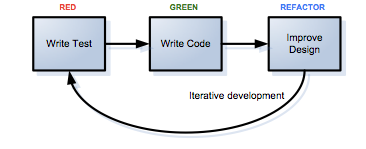

Test Driven Development(TDD)
TDD is a programming technique or method of software development in which unit testing is repeatedly done on source code. It is a widely used approach for development which combines test-first development where you write a test before you write just enough production code to fulfill that test. The idea is to get something thats working now and you perfect it (refactor) later.
The goal of TDD is specification meaning that to think through your requirements or design before you write your functional code.TDD helps to cut development costs, it shorten the development time to market, it increase the programmer’s productivity, it provides an effective, organized and neat code that works, it shorten the development feedback time, it provides unmistakable proof that the software code works as intended and it also encourage the writing of a quality code
In the development environment there is a motto used for test-driven development which is “ Red, Green, Refactor.” Since TDD revolves around a short iterative development cycle, it works in a way that :
- Write a single unit test describing an aspect of the program
- Red: Create a test and make it fail. when you run the test, it should fail because the program lacks that feature.
- Green: Make the test pass by any means necessary. Write “just enough” code, the simplest possible,to make the test pass.
- Refactor: Once the code passes the test,Change the code to remove duplication in your project and to improve the design while ensuring that all tests still pass.
- Repeat accumulating unit tests over time
When a program has been developed using TDD, it allows us to make changes and test quickly and efficiently. If it passes all automated tests, then we are good to go but if it doesn’t, it just means we need to change some part of the code until it passes.